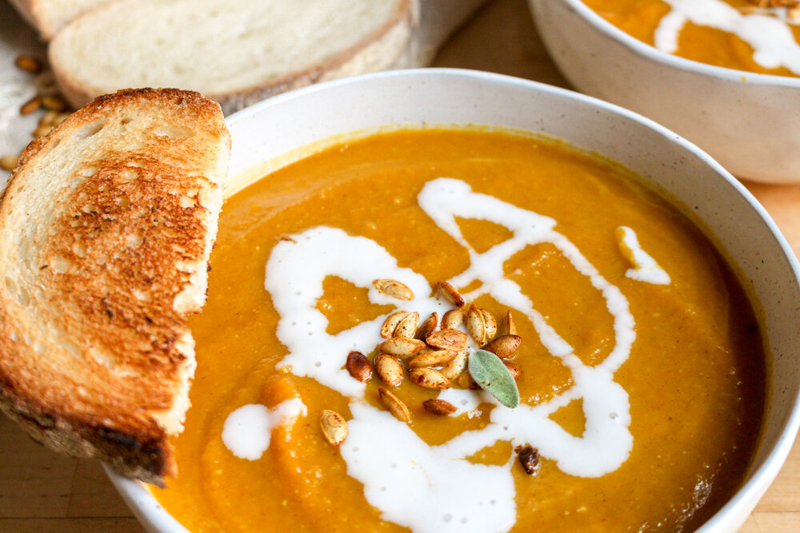

Autumn Squash Soup
Spicy Noodles
Autumn Squash Soup
Katsudon

A warm, cinnamon-y, soothing autumn squash soup that begged for a piece of a french baguette to be dipped into.
Ingredients:
- 5 cup butternut squash, peeled & cubed
- 1 tbsp olive oil
- 1/2 tsp salt
- 1/2 tsp cinnamon
- 1/2 yellow onion, diced
- 1 carrot, diced
- 2 garlic cloves, minced
- 1 gala apple, peeled and chopped
- 2 1/2 cups vegetable broth
- 1/2 cup milk of choice (oat milk or heavy cream preferred)
- 1 cup pumpkin puree
- 1 tbsp olive oil
- 1 tbsp brown sugar
- 1/2 tbsp sea salt
- 1 tsp curry powder
- 1 tsp cinnamon
- 1/8 tsp nutmeg
- 1/4 tsp ground ginger
- 1/4 tsp cayenne pepper
Steps:
- Preheat oven to 400F; peel and cube butternut squash
- Coat butternut squash with olive oil, salt, and cinnamon; roast for 20-25 minutes; set aside
- In a small bowl, mix together curry powder, cinnamon, nutmeg, ground ginger, and cayenne pepper to create the “spice mix”.
- Heat 1 tbsp olive oil in a pot, saute onion, carrot, apple, and garlic until softened
- Add “spice mix” and cook until fragrant
- Stir in vegetable broth, milk, pumpkin, roasted squash, salt, and brown sugar
- Simmer for 10-15 minutes
- Using an immersion blender (or food processor), blend everything until thick and smooth
- Serve with roasted butternut squash seeds (see notes), a drizzle of heavy cream, and crusty bread/li>